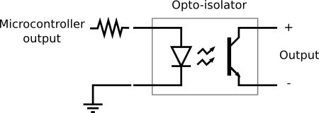
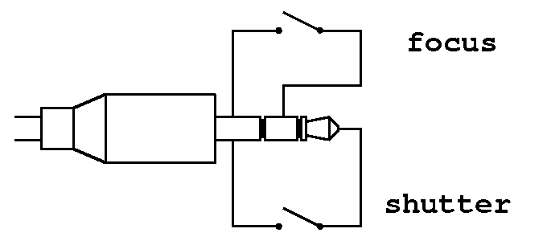

An intervallometer is a device that control how often, how long and how many shots are taken, usually with a reflex camera. It's used to make, for example, timelapses.
I have a Canon EOS 600D. This camera doesn't have an internal intervallometer. I didn't want to buy an intervallometer, so I installed (at my own risk) a custom firmware with this function. After some tests I noticed that my camera run out of battery after just few hours, in other words, the intervallometer problems became a power supply problem and an external battery pack is so expensive. I had to find another solution.
One day I decided to build an external intervallometer using an old and dusty ATmega328P forgotten in a drawer for months. With three seven-semgments display, some switch and two optocouplers I builted my own intervallometer. I also 3D printed the case.
An optocoupler (or optoisolator) is an integrated circuit able to act as a "bridge" between the logic circuit and the camera. It's composed by an LED and a photosensor. When the microcontroller turns on the LED, the photosensor close the contact between the output wires: in this way the logic circuit is electrically isolated from the camera circuit. The answer is therefore: safety. A reflex camera is very expensive and apply random voltages to it isn't the best choice.
This is the electric diagram of an optocoupler. You can find more informations on Google.
This is a simple diagram of a camera jack pinout. With the image below as a reference: GND on the left, focus on the middle and shutter on the right.
These are some of the timelapses I took.